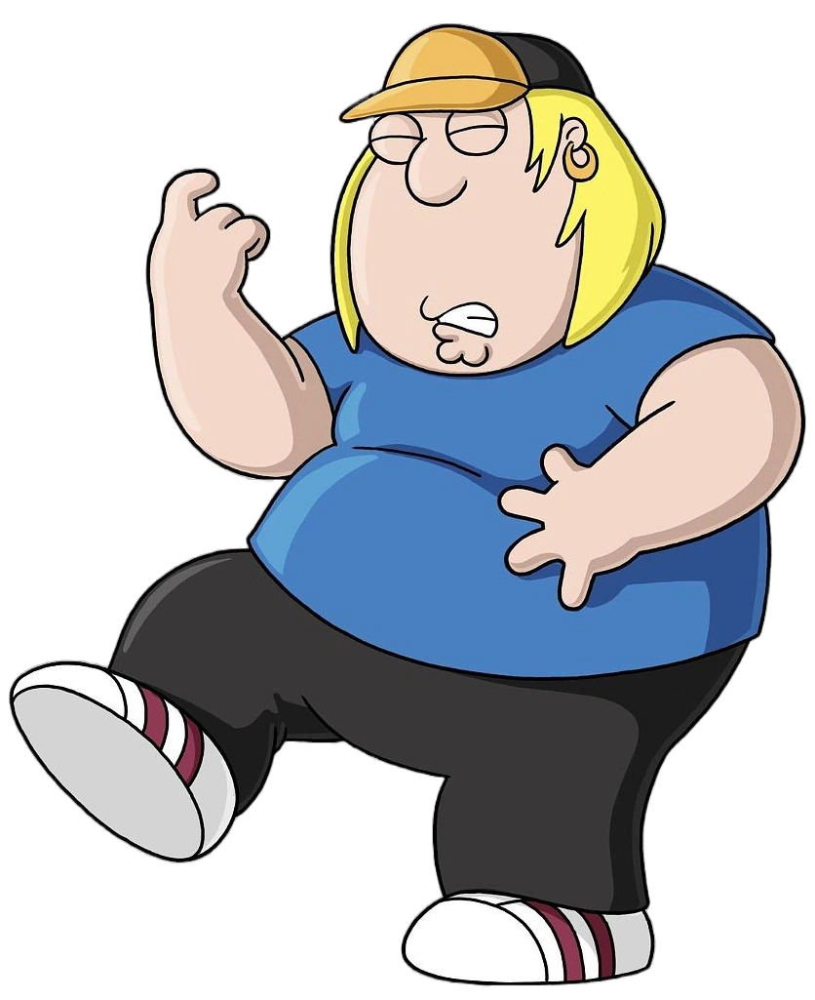
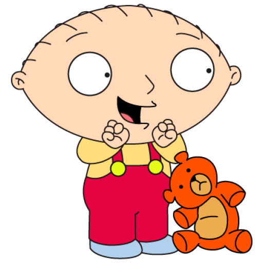
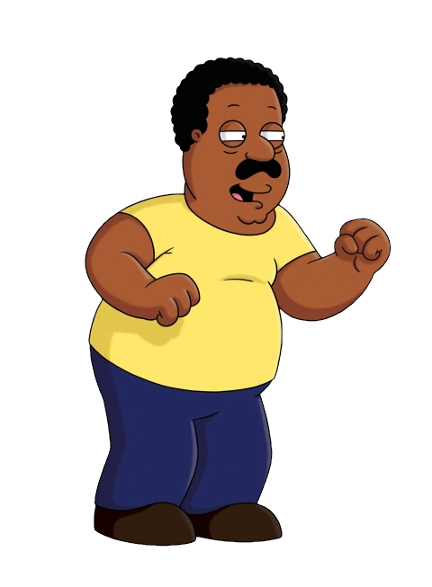
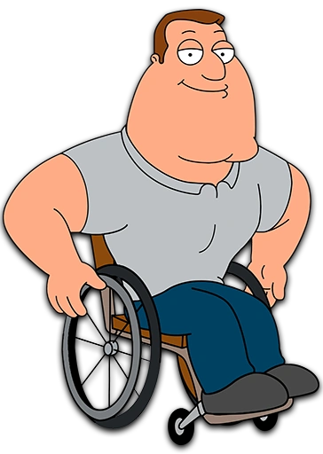

Peter Löwenbräu Griffin Sr. (born Justin Peter McFinnigan)
is married to Lois and is the father of Meg, Chris, and Stewie.
He also has a dog named Brian, with whom he is best friends. He has worked at a toy factory and at Quahog's Brewery.
Peter Griffin is a middle-class Irish American in his mid-forties, who is a bespectacled,
obese blue-collar worker with a prominent Rhode Island and Eastern Massachusetts accent.
Peter's age has never been officially confirmed and has fluctuated throughout the series,
although he's consistently referred to as being in his early-to-mid 40s. Peter and his wife,
Lois, have three children: Meg, Chris, and Stewie. He also has two deceased children: Peter Jr.,
who was shaken to death, and Dave, Stewie's twin who is implied to have been killed by Stewie during childbirth.
He is the illegitimate son of Thelma Griffin and Mickey McFinnigan, and was raised by Thelma and his stepfather, Francis Griffin


Lois Patrice Griffin (born Pewterschmidt) Lois is the mother and matriarch of the Griffin family.
She was born to affluent WASP (White Anglo-Saxon Protestants) parents, Carter and Barbara Pewterschmidt.
her mother is actually a Jewish American Holocaust survivor who concealed her Judaism,
Lois speaks with a distinctive nasal New England accent.
Lois is a housewife, though she did give piano lessons in early episodes.
She is commonly the voice of reason to Peter's shenanigans,
but sometimes she can act darker than normal and sometimes shows a taste for sadomasochism.
Megan "Meg" Griffin is the eldest child of the Griffin family,
Meg is a self-conscious and insecure adolescent girl.
She is treated unfairly and abused by various people and has numerous insecurities that prompt her to try to be part of the "in-crowd".
However, this only results in her getting rebuffed by the many bullies of this circle, particularly Connie D'Amico,
the head cheerleader of the local high school, James Woods Regional High School.
However, a nerdy Jewish student named Neil Goldman is attracted to her.
Meg is usually the butt of Peter's jokes due to her unpopularity and "ugliness"; Peter resorts to outrageous stunts and names.
Stewie and Brian tend to disdain her kindness, but they typically do it behind Meg's back.
Lois constantly puts Meg down, while boosting her own ego. Lois is usually of little to no help to Meg when she is abused by others;

Christopher Cross "Chris" Griffin is the middle child of the Griffin family
Similar to his older sister Meg, Chris is portrayed as a typical adolescent,
albeit one who comes off as being good-natured and easy-going. As such, the character tends to take things in stride,
not worrying about much, seemingly enjoying his position in life.
Chris is usually portrayed as a faster learner than Peter,
He also shares his father's cartoonish lack of common sense, tends to be absent-minded, gets confused easily, and appears to be extremely naïve
Stewart Gilligan "Stewie" Griffin is a highly precocious toddler who talks and acts as an adult, he
has a sophisticated voice and can speak very fluently in an upper-class English accent with quite-advanced vocabulary.
He began the series as a megalomaniacal sociopath, initially obsessed with violence, matricide, and world domination.
He is the youngest child of the Griffin family.
The violent aspects of Stewie's personality were toned down, and he has evolved into an eccentric,
friendlier, and flamboyant scamp. He has also come to have a very close friendship with the family's anthropomorphic dog,
Brian, whom he originally used to antagonize in the earliest episodes.


Brian Griffin is an anthropomorphic white labrador retriever who primarily works in the series as a slightly smug
and less-than-adept writer struggling to find himself, attempting essays, novels, screenplays, and newspaper articles.
Brian is an Atheist. He is often portrayed as the only sane person in his family
Brian's human attributes receive little acknowledgment and no explanation; he is largely treated as a human character.
Brian is the best friend of Stewie they have a love-hate relationship in which they constantly argue and humiliate each other,
and yet show appreciation for each other several times. They also admitted that they loved each other as friends,
and gave each other's lives purpose.
Cleveland Orenthal Brown Sr. is a neighbor and friend of the Griffin family and is best known for his mild-mannered deadpan delivery.
His established profession was that of a deli owner, before he switched over to being a postal worker.
Cleveland is usually depicted as exceedingly patient and sweet,
and only on rare occasions has he been known to lose his temper and resort to violence.
However, Cleveland gets visibly annoyed with racist behavior.
He often acts as the voice of caution when other characters hatch harebrained schemes. Cleveland's speech is slow, almost elongated.


Glenn Quagmire, often referred to by just his surname,
he is a neighbor and friend of the Griffin family and is best known for his hypersexuality and his catchphrase, "Giggity Giggity".
Quagmire is a bachelor who works as a commercial airline pilot.
He has had two spouses: Joan, a maid for the Griffins who died; and Charmise, a prostitute whom he divorced.
Quagmire briefly dated Cheryl Tiegs, whom he considers his long-lost one true love, in the early 1980s,
but she dumped him because of his constant jealousy and his sex addiction.
Joseph "Joe" Swanson is a macho paraplegic police officer in the Quahog Police Department
who is at many times subject to intense anger problems. He is married to Bonnie Swanson and has two children; Susie and Kevin.
Joe originally claimed he received his paralyzing injury one year on Christmas.
He was investigating a robbery at an orphanage, and during a faceoff with The Grinch,
he slid off the roof tripping on a roller skate, injuring his spine and leaving him paralyzed from the waist down.
He later revealed that he really was shot by Bobby Briggs when undercover at his heroin lab when he found out he was a cop.

Bonnie Swanson is the wife of Joe Swanson, and mother of Kevin and Susie Swanson.
Bonnie is much calmer than her husband Joe but usually fails in her attempts to quell his outbursts.
She once said in that she can't ever say no to her husband. This changes when Joe gets new legs, becomes a jerk and leaves Bonnie.
She then tries to shoot him in the back, crippling him, but misses several times, which then reduces Joe to shooting himself.